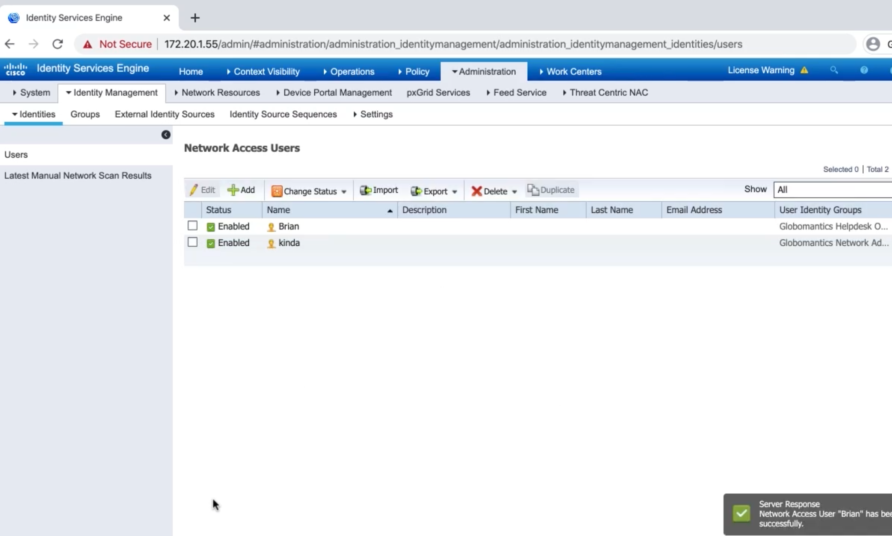

Configuring AAA on Cisco IOS Device for Use with Cisco ISE¶
Configuring Cisco ISE to Support TACACS¶

Enable TACACS+¶

Define a network device¶

Configure identity groups¶

Configure identities¶
Configuring Policy Sets in ISE for Device Administration¶

Configure TACACS Profiles¶

Configure TACACS Command Sets¶

Configure Device Admin Policy Sets¶
Configuring an IOS Device to Use TACACS+ for Administration¶
Globo-HQ(config)#tacacs server GloboISE1
Globo-HQ(config-server-tacacs)#address ipv4 172.20.1.55
Globo-HQ(config-server-tacacs)#key GloboISE123
Globo-HQ(config-server-tacacs)#exit
Globo-HQ(config)#aaa group server tacacs+ GloboISEGroup
Globo-HQ(config-sg-tacacs+)#server name GloboISE1
Globo-HQ(config-sg-tacacs+)#ip vrf forwarding Mgmt-intf
Globo-HQ(config-sg-tacacs+)#ip tacacs source-interface gig 0/1
Globo-HQ(config)#aaa authentication login default group GloboISEGroup local
Globo-HQ(config)#aaa authentication enable default group GloboISEGroup enable
Globo-HQ(config)#aaa authorization exec default group GloboISEGroup local if-authenticated
Globo-HQ(confia)#aaa authorization console
Globo-HQ(config)#aaa authorization config-commands
Globo-HQ(config)#aaa authorization commands 0 default group GloboISEGroup local if-authenticated
Globo-HQ(config)#aaa authorization commands 1 default group GloboISEGroup local if-authenticated
Globo-HQ(config)#aaa authorization commands 4 default group GloboISEGroup local if-authenticated
Globo-HQ(config)#aaa authorization commands 15 default group GloboISEGroup local if-authenticated
Globo-HQ(config)#aaa accounting exec default start-stop group GloboISEGroup
Globo-HQ(config)#aaa accounting commands 0 default start-stop group GloboISEGroup
Globo-HQ(config)#aaa accounting commands 1 default start-stop group GloboISEGroup
Globo-HQ(config)#aaa accounting commands 4 default start-stop group GloboISEGroup
Globo-HQ(config)#aaa accounting commands 15 default start-stop group GloboISEGroup